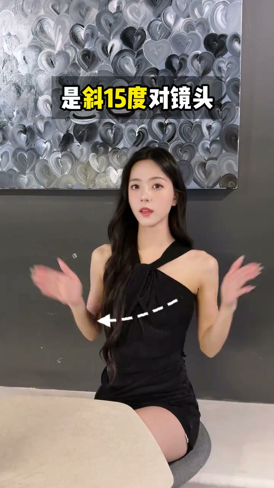
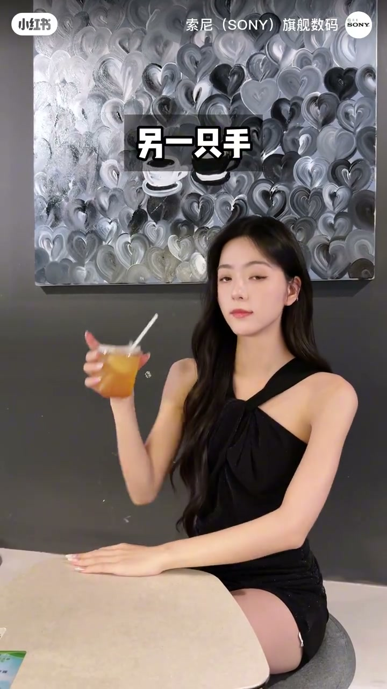
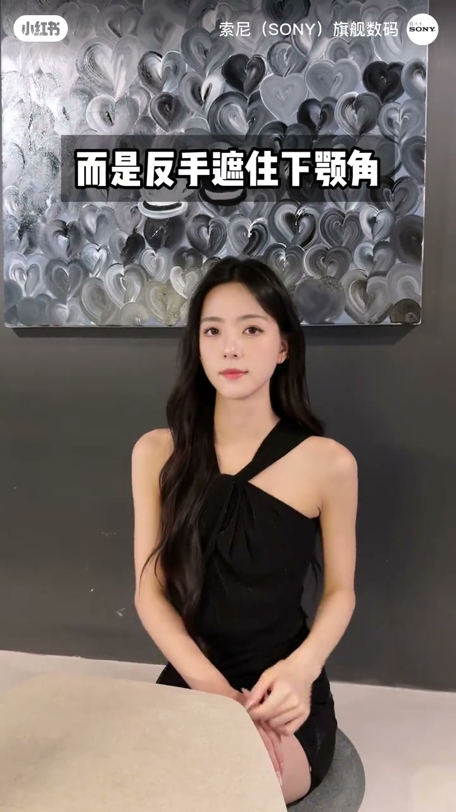
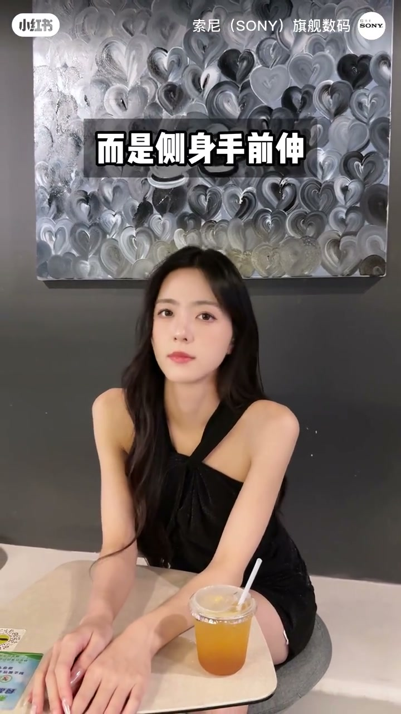

内容要点
一支 44 秒的显脸小 pose 教程：从纠正「撑脸拍反而显脸大」开始，教斜 15 度追镜头、手扫下颌线、手向斜前 45 度延伸；再用杯子挡脸、手撑脸、拿杯向身侧、特写撩发等组合，用手的线条与前景层次把脸衬小。
知识结构
[00:00→00:12]
基础：追镜头 + 扫下颌线
不要撑脸拍；斜 15 度追镜头，一手轻轻扫出下颌线，另一手向斜前 45 度延伸，用手部线条引导视线、衬出脸型。
[00:12→00:27]
桌边：杯子挡脸与手撑脸
杯子挡脸要一手平放桌面、另一手拿杯往前伸，靠杯子的深度错位显脸小；手撑脸要反手拄下颌角、另一手平放桌面。
[00:27→00:44]
进阶：拿杯向身侧与撩发
拿杯不要正对镜头，而是杯子拿向身侧、头往镜头方向后放；特写镜头下手前伸、单手撩发收尾，动态感更强。
总结
显脸小的本质是「用手制造前景层次」：杯子、手掌、前伸的手臂形成遮挡与景深，让脸在画面里相对变小，而不是真的把脸挡住。
00:00-00:12追镜头+扫下颌线：基础显脸小
00:00第一组纠正最常见错误：想显脸小，不是撑脸拍——那样反而显脸大。正确做法是斜 15 度追镜头，用一只手轻轻扫出下颌线，同时另一只手向斜前 45 度延伸，用手的线条引导视线、衬出脸型。

[00:05] 斜15度追镜头，一手扫下颌线、另一手斜前45度延伸
Tilt 15 degrees toward the lens, sweep the jawline with one hand and extend the other at a 45-degree angle.
00:12-00:27杯子挡脸与手撑脸：桌边姿势
00:12杯子挡脸不是直接拿杯子贴脸拍。正确拍法是一只手平放桌面，另一只手拿杯子往前伸——杯子的深度错位让脸更小。
00:20手撑脸也不是直接撑，而是反手注视下颌角，另一只手平放在桌面，姿态松弛又显瘦。

[00:16] 一手平放桌面，另一手拿杯子向前伸
Rest one hand flat on the table and reach the other forward holding a cup.

[00:23] 反手注视下颌角，另一只手平放桌面
Rest your chin on the back of your hand and place the other flat on the table.
00:27-00:44拿杯向身侧与撩发：进阶收尾
00:27拿杯子的高级拍法：不是正对镜头拿杯，而是杯子拿向身侧、头往镜头方向后放，再单手向后撩发。
00:36最后手前伸也不是直直伸手，而是镜头特写、手向前伸，配合单手撩头发收尾，动态感更强。

[00:39] 特写手前伸，单手撩头发收尾
Close-up of the hand reaching forward, then a one-hand hair flip to finish.
显脸小的本质是「用手制造前景层次」：杯子、手掌、前伸的手臂都能形成遮挡与景深，让脸在画面里相对变小，而不是真的把脸挡住。